来源：https://k4h4dcpi91.feishu.cn/docx/BH96dfPkBoyUgFx4EaQcOkIOndc
大家好，我是李百万，从2022年开始，我接触到自媒体，做过小红书，也做过视频号，目前主攻视频号赛道。
从2022年12月躬身入局到目前，我在视频号赛道已经取得了一些成绩，个人累计变现100万，
也带了一批学员取得了一些成绩。这一路经历了视频号风口的5个阶段：
1，短视频搬运混剪打法
2，短视频混剪付费挂车打法
3，自然流马扁直播打法
4，滋补品付费憋单直播打法
5，素人IP原创短视频挂车打法
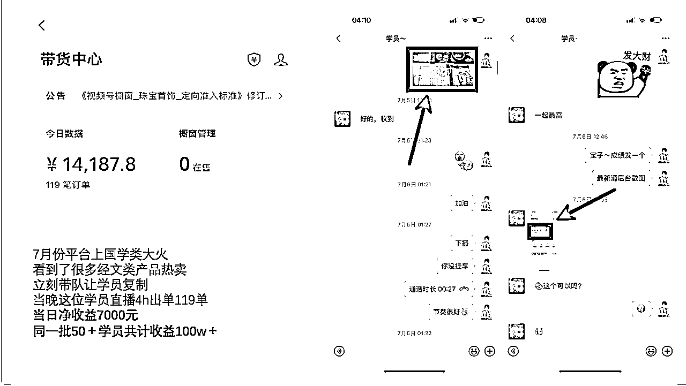
（国学短视频搬运混剪学员）
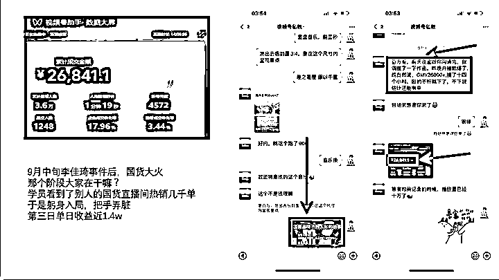
（国货短视频混剪学员）
今天从我的角度，跟大家聊聊我的一些感悟，希望能对大家有所启发。
开始之前，和大家分享一句我特别喜欢的话：
视频号赚钱其实很简单
找到一个成功的赚钱案例，1:1复制
接下来从我个人做过的里面挑选出了三个还值得继续做的项目和大家展开说说：
视频号，把抖音的路子重新走一遍
这个玩法，从22年底就有，一开始是直接搬运混剪，利润非常可观。但是我知道并下场已经是23年6月份，浅浅试了下，废号严重就没有做。
直到7月份，刷视频流出现大量的混剪账号，我在想可能有可以了，于是下场测试。
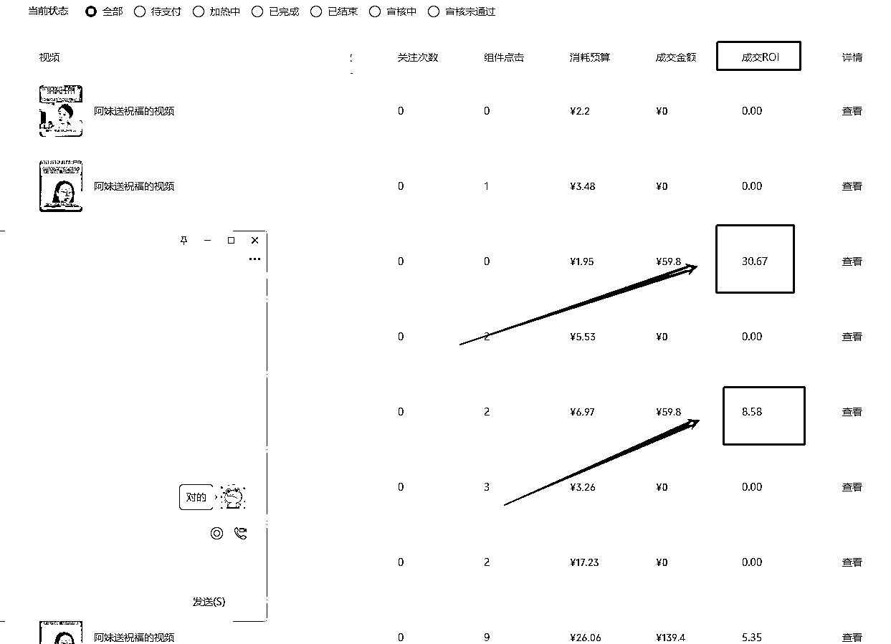
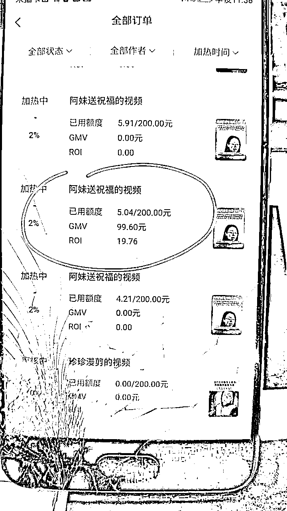
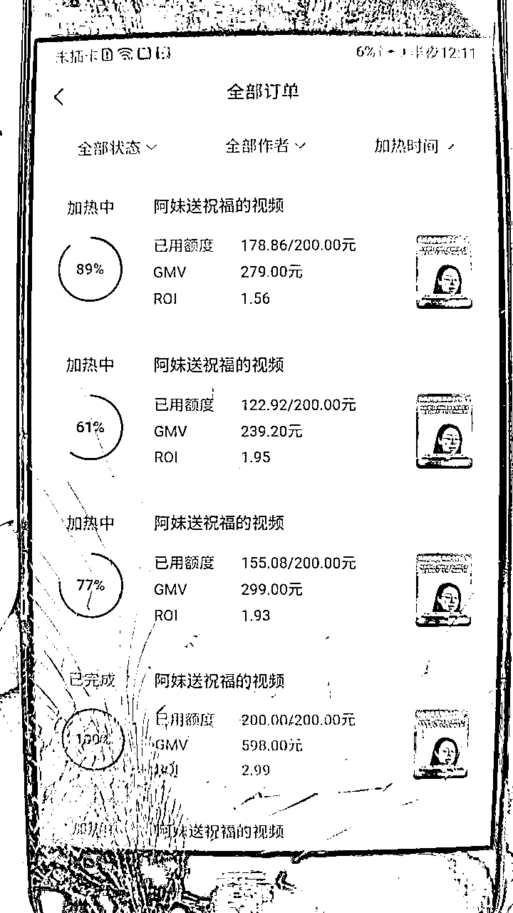
当时买到账号后，选好品当晚混剪测试投放就有了正反馈，而且有很可观的数据。
于是立马开始了放大，买了5个账号，第二天矩阵测试五个号都没问题，第三天购买了30个账号
后问题出现了：
买来的账号因为与历史内容不符，批量的取消了挂车权限。
共计购置36个账号废掉后只救回来3个，其余也就变成了项目损耗，实话说怪心疼的。
当时因为同步在打其他项目短视频挂车也就搁置了。
建议大家：稳中求进，快速跑通0~1然后1~2，2~3，过程中评估风险和收益，敬畏平台和风险。
因为本身混剪是逆平台的，想要通过投放杠杆获利除了品这个核心外，也需要账号这个工具，那账号的挂车权限尤为重要，风险点也就是平台判定内容前后不符取消挂车权限而无法投放。
近期这个玩法仍然可以玩儿，取消挂车权限是因为内容前后不符，如何解决：
如果被系统取消挂车权限，提供对应的剪辑工程截图申诉说内容是原创实拍剪辑。
（但是大家发布时不建议框选原创）
这个玩法现在重在快速选品测品，大多数品可能并不会有什么量，但测出一个品有量梭哈即可稳赚。
经历过国学废号玩法，混剪短视频付费挂车废号玩法后，比较心累。
因为我知道以往赚的钱不要命的执行力只是其中最小的一环，站在风口且有掌握信息差才是。
想好好做一个长期项目，于是刷广场，几天筛下来，看到很多和视频号人群匹配度很高的品
“女人爱美，老人怕死”，基于这两句话就能延伸出无数的品，但是传统药补类根本做不了。
就选出很多药食同源产品，挨个蹲直播间，观察真实用户需求，销售额，预估利润率。。。
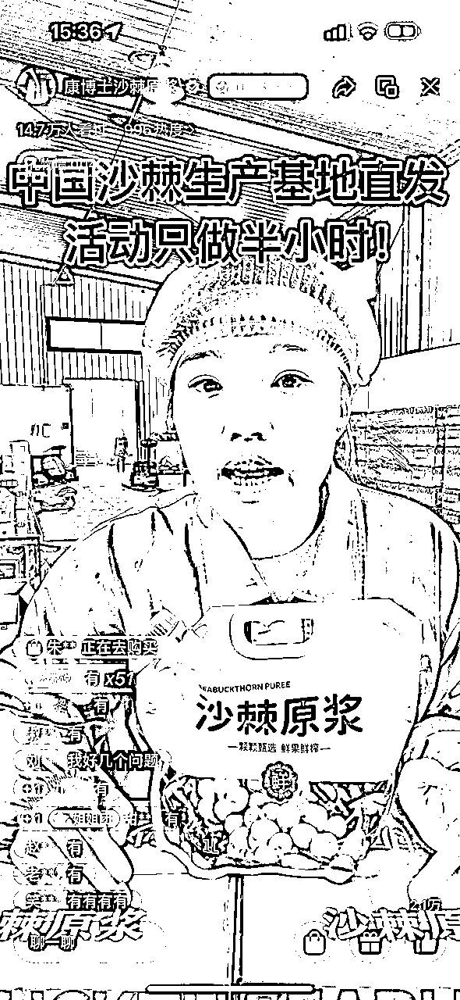
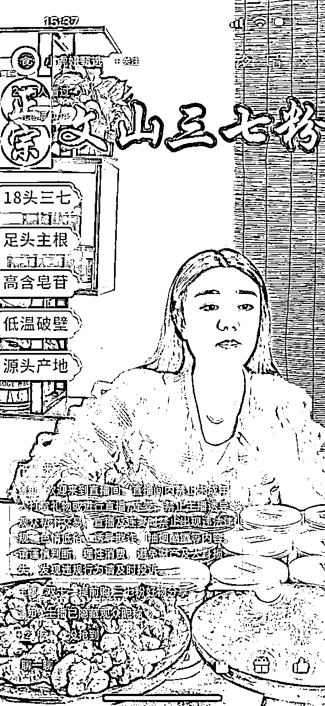
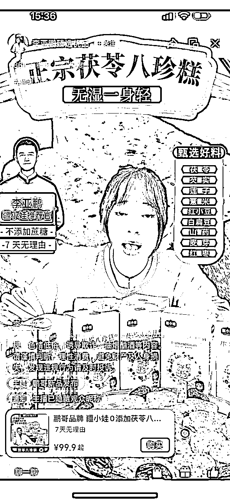
最终筛选出来几个产品，但也遇到很多问题：
好的直播间基于好的人货场，场相同情况下，好品品带人，一般品人带品。
主播筛选是一大问题，筛选不下40位主播后筛选到一位合格的主播。
项目启动先后测试多款产品：三七粉，葛根粉，养生茶饮类。
测试下来最终敲定几款产品，前前后后经历过许多问题：
账号评分
账号评分掉的很快，这个目前视频号用户很多人并不会评价甚至找不到评价的地方，账号评分就会掉的比较快，需要持续跟进补分。。。如果是付费的话账号橱窗分低于4.2还无法刷分，所以每当评分接近4.2时就要立刻补分。
话术
这个类目产品话术上涉及功效极易违规，有一阵子天天换号人都麻了，所以大家在做滋补类时候个人建议先过话术，不断测试并优化后，再进行团队化。不然违规后不能开播，单日员工成本蛮高的。这一块我后面都是所有要打的品自己写话术，举例：功效不能直接讲，但是可以把功效词的作用场景化，例如失眠就写成晚上翻来覆去睡不着，湿气重写成一到冬天手脚冰凉等等。话术这块大家可以一起多多交流
投放卡点
滋补类产品利润都在70%左右，在主播完成话术学习且熟练后，都会介入付费投流，因为自然流极不稳定，而且有些品利润可观爆了后会立马有一大堆人跟品，所以当验证产品可行投放也可以打正，会自己卷自己，多开或者投放往满的拉。这里建议大家用实景，因为功效类产品投放时经常容易因为绿幕违规拒审一批计划。以及预约计划开播前五分钟在审核，让主播先说欢迎，计划都通过后再进行正式话术，如果是绿幕那开播的前五分钟先不放涉及功效的贴片，和话术一样，预约计划全部过审后再放。
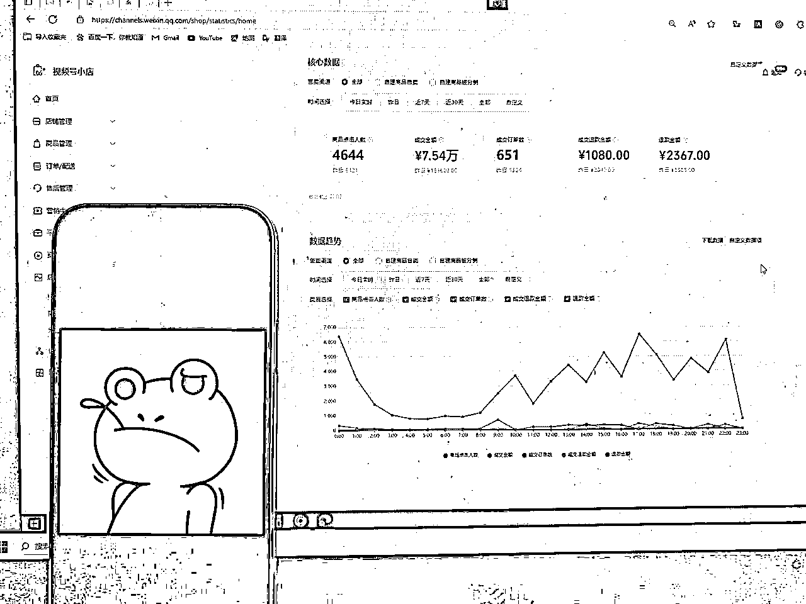
小建议：
我就是，虽然做过直播，但是正规军团队化去做，很多卡点，评分不足无法投放，主播话术违规无法投放，产品没有量测品换品等。。。在杭州每天很高的成本，那阵子各种卡点导致亏了许多真的是心在滴血。所以建议大家最低成本试错及准备，验证可行后再根据个人情况规模化团队化。
当直播进入到一个稳定阶段，因为一次盗坤哥在线下分享大会的一句话，让我实现单日最高6w＋收益
这句话也分享给大家：视频号，把抖音的路子重新走了一遍
当天我就想到之前的混剪图文挂车，只是因为内容不合规，那让内容合规不就好了，当时也是气的拍大腿，气之前为啥没想到。验证过实拍但是吃内容团队，直到在视频号刷到这种账号
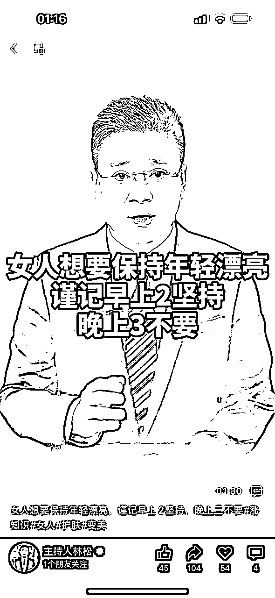
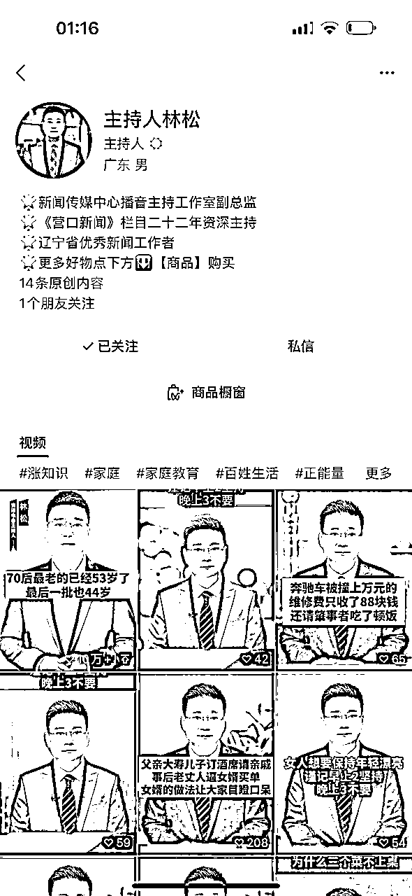
简单来说就是通过口播形式描述挂车商品进行售卖
这完全就是抖音的达人短视频挂车玩法换了一个平台而已
赚钱的事情简单直接，没有过多的无效动作
主持人ip是比较难遇到的，那不妨试试素人ip，于是多渠道面试筛选到合适的演员后直接下场
红利期比拼的就是速度了，于是执行力拉满，通宵研究选品和脚本，终于也有了柳暗花明
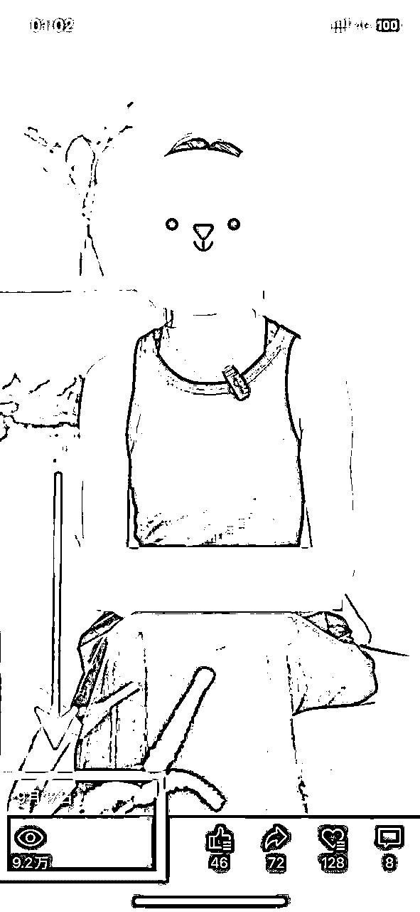
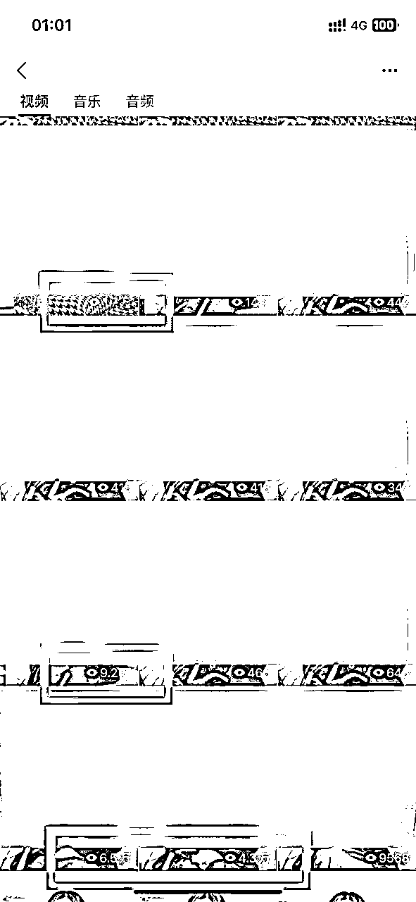
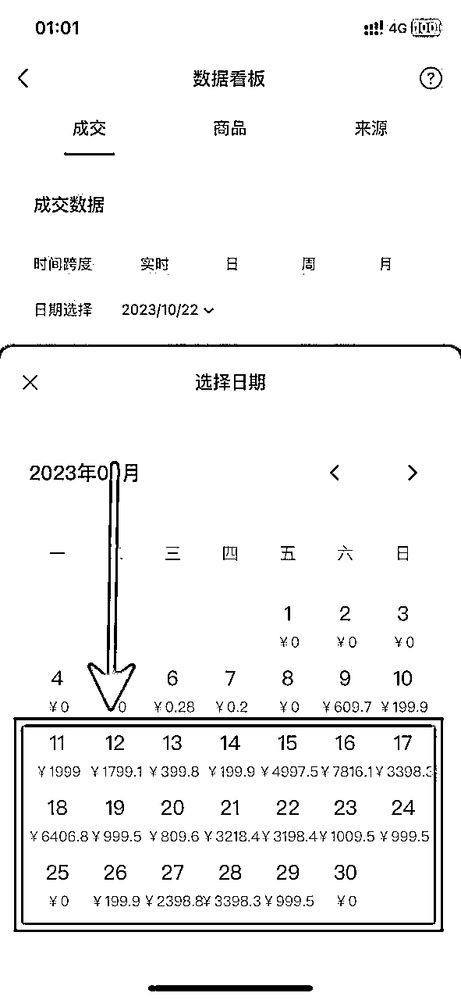
（演员矩阵账号中其中一个）
单个演员矩阵素人账号，一个产品就给我带来了丰厚的回报。（当时记录的单日投放数据）
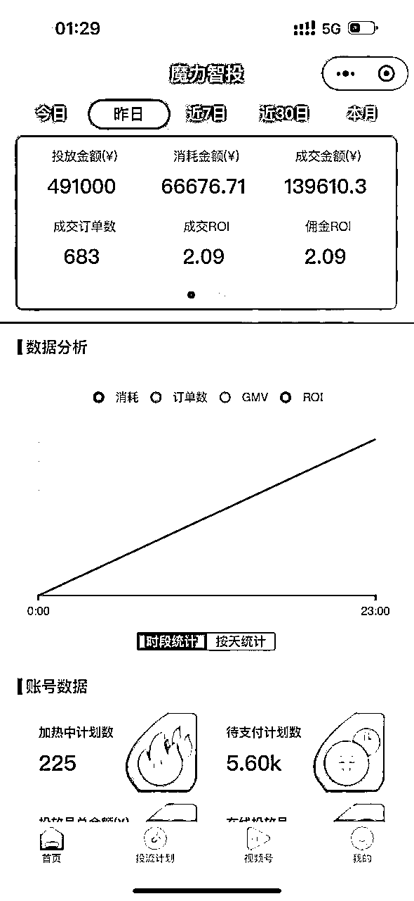
产品售价199元，减去退货率等保本ROI是1.31
项目的核心在于品，口播，剧情等都只是内容形式，只是对于我的团队来说口播形式最为简单和高效
视频号平台的人群十分优质，很少存在比价行为。也就可以高定价。
选品这块大家可以参考我的过往文章
我个人打的就是一款痛点功能性内衣
打开蝉妈妈网站，点击-商品库，首先看完当日全类目视频按照销量排序，短视频带货销量>60%的前300个带货产品。
其次，根据季节、时间、产品热度挑选适合的类目查看部分类目前100个产品。（例如：2,3,4月份是减肥的季节，可以看运动户外/日用百货等热度较高的类目）
找到合适的产品之后，先看人群画像，是否40+人群占比40%以上，其次再进行视频脚本分析，按照销量排序，观察前几个视频脚本的内容形式、时长，是否符合视频号人群。
根据视频号刷到的带货视频，找到相应的同行店铺，按照销量、热度进行排序，在抖音内找到对应链接摘录脚本。
选品之外的剪辑及养号等，圈友纸壳写的就很详细我就不过多赘述
@纸壳
这个项目目前仍然处于红利期，分享出来希望更多的朋友一起研究，互相交流探索，一起生财有术。
自从加入生财后，在很多圈友的见证下，从无到有，从单打独斗到后面有了团队
这里面有晓文哥的时常鼓励，理白哥靠谱姐比比的时常引导和帮助，还有很多圈友的默默支持
我出身农村，毕业初期做过服务员，也曾进过工厂，加入生财前正值创业失败欠了一屁股债，这一路吃过太多次没钱的苦。
能够加入社群被这么多圈友鼓励支持着，我是十分幸运的。
也因为知道自己要什么，所以更拼命；因为被社群和大家无私帮助着，所以更不想辜负。
出身寒微本就没有退路，想要什么都只有靠自己用全力去争取！在生财一起生财有术！干就完了